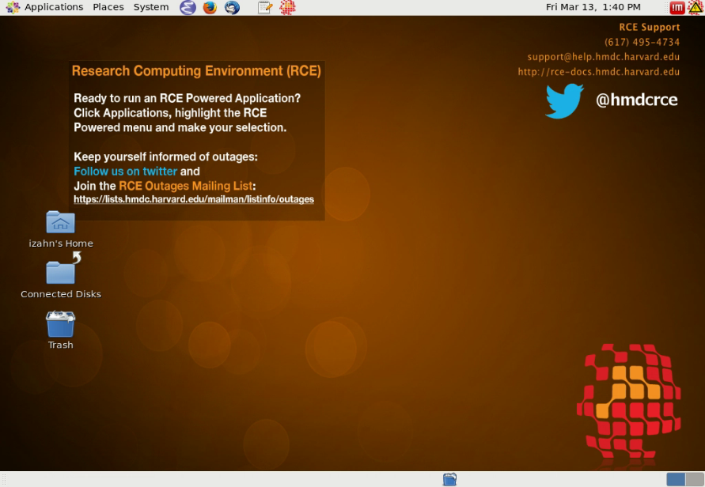
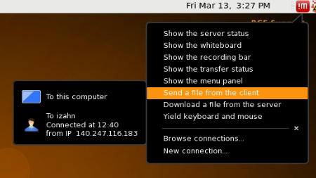

1 RCE Setup
1.1 Access
You can access the RCE using the
NoMachine remote
desktop software, or via the command line using ssh. If you are a
command line wizard and only need to run batch jobs ssh is the way to
go; for most of us however nomachine is a much more useful way to
access the RCE. It allows you to interact with the applications on the
cluster much as you interact with applications on your local computer.
To get started, download the NoMachine client for your operating system:
After downloading, Windows users should right-click on the
nomachine-client-windows-latest.zip file and choose Extract to here.
Open the NoMachine Client folder and double-click on the .exe files to
start the installation (the Windows zipfile contains the NX client, plus optional
font packages. HMDC recommends installing all font packages, though
this is not required). Mac users should double-click on the
nomachine-client-osx-latest.dmg and double-click on the installer
package to begin the installation.
Once you have installed the NoMachine software you should launch the NoMachine application and set up your login credentials.
Once the application launches:
- Click
Continue. - Click
Click here to create a new connection. - Keep clicking
Continueuntil you get to the Hosts screen. - Fill in the Host field with
rce.hmdc.harvard.edu. - Keep clicking
Continueuntil you get to the Name screen. - Fill in the Name field with
RCE6and clickDone.
Once you have configured NoMachine you should test it out to make sure you can connect to the RCE:
- Click on the
RCE6entry and then clickConnect. - Fill in the user name and password fields with your RCE user name and password.
- On the following screen click on
New virtual desktop or custom session. - Click on
Create a new virtual desktopand clickContinue.
After completing these steps you should see an instruction screen; click
OK and you should see your RCE desktop, which will look something like
this:

If you have any difficulties installing NoMachine, detailed documentation is available at http://projects.iq.harvard.edu/rce/nx4; if you do not find a solution there send and email to help@iq.harvard.edu and someone will assist you.
1.2 Compute nodes
You can run applications on the RCE interactively or using the batch system. If you simply want a more powerful version of your PC (e.g., more memory, more CPUs) then the interactive nodes are what you want. If you want to split your task up into hundreds of pieces and run each piece simultaneously, then you want the batch modes.
More specifically, the RCE provides three levels of service:
- Login nodes
- Provides access to a desktop environment (similar to Remote Desktop) from which you can launch applications. The login nodes should not be used for computationally intensive jobs; the main function of the login nodes is to provide access to the interactive and batch nodes. You access the login nodes using the NoMachine client, as described in Accessing the RCE.
- Interactive nodes
- Interactive nodes allow you to run applications on very powerful
computers. You can launch applications on the interactive nodes from
the login node desktop using the
Applications --> RCE Powered Applicationsmenu. Applications launched from this menu will run on more powerful machines with large memory resources (up to 256GB) and up to 24 CPU cores. - Batch nodes
- Where interactive nodes give you access to a single very powerful
computer, batch nodes provide a swarm of hundreds of small
computers. You can run your computation in parallel on each of them,
which can provide dramatically reduced compute time for many
applications. You access the batch nodes using the command line
which you can access by starting a terminal application from the
Applications --> Accessories --> terminalmenu.
1.4 Moving your data on and off
People often use the RCE for memory or CPU intensive data analysis projects. If this is your intention as well, chances are that you have one or more (potentially large) data files that you will need to copy to the RCE. Remember that disk space in your home directory is limited, so if you have a large amount of data make sure to transfer data directly to your project space folder.
The simplest approach is to use the NoMachine client to transfer data
from your local machine to the RCE (and from the RCE to your local
machine). Click on the red !M icon in the upper right-hand corner and
select the Send a file from the client menu, as shown below.

If you prefer to transfer files using another file transfer client,
anything that uses ssh (e.g.,
FileZilla) should work. Just point your
favorite client to rce.hmdc.harvard.edu.